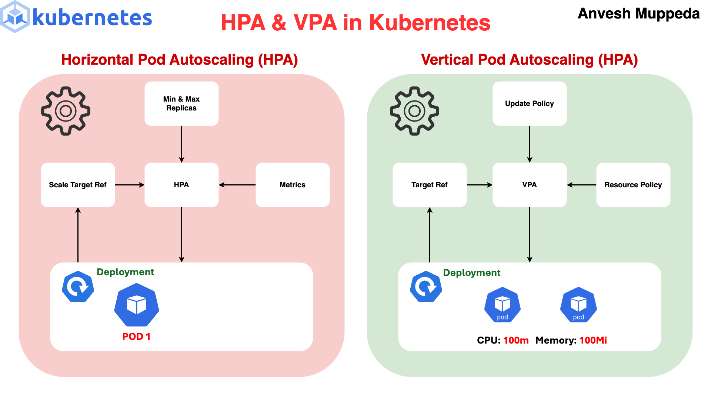

Kubernetes Architecture: What Actually Runs
After running Kubernetes in production across 15+ clusters for 6 years, I've found that most incidents trace back to misunderstanding how the components interact. Let's break down what's actually running.

Control Plane Components
Control Plane
kube-apiserver — The front door. Every kubectl command, every controller, every kubelet talks to the API server. It validates requests, authenticates them, and writes to etcd. If the API server is down, nothing works — but existing pods keep running.
etcd — The brain. A distributed key-value store holding all cluster state. Lose etcd, lose your cluster. Back it up every hour. I've seen teams lose entire clusters because they didn't back up etcd.
kube-scheduler — Decides which node runs a new pod. Considers resource requests, affinity rules, taints/tolerations, and topology spread constraints. If the scheduler is down, new pods stay Pending but existing pods are unaffected.
kube-controller-manager — Runs ~30 control loops: Deployment controller, ReplicaSet controller, Node controller, etc. Each loop watches the desired state in etcd and makes reality match. This is the "self-healing" part of Kubernetes.
Node Components
| Component | Role | What Happens If It Dies |
|---|---|---|
| kubelet | Agent on each node. Pulls pod specs from API server, tells container runtime to start/stop containers, reports node status. | Node goes NotReady after 40s. Pods get evicted after 5 minutes (default). |
| kube-proxy | Manages iptables/IPVS rules for Service networking. Routes ClusterIP traffic to pod endpoints. | Service discovery breaks. Pods still run but can't reach other services by name. |
| Container Runtime | containerd (or CRI-O). Actually runs containers. Docker was removed in k8s 1.24. | No new containers can start. Existing containers keep running until they exit. |
Core Objects You Must Understand
Pods and Deployments
A Pod is the smallest deployable unit — one or more containers sharing network and storage. You almost never create Pods directly. Use a Deployment, which manages ReplicaSets, which manage Pods.
apiVersion: apps/v1
kind: Deployment
metadata:
name: order-service
namespace: production
spec:
replicas: 3
strategy:
type: RollingUpdate
rollingUpdate:
maxSurge: 1
maxUnavailable: 0 # Zero-downtime deploys
selector:
matchLabels:
app: order-service
template:
metadata:
labels:
app: order-service
version: v2.1.0
spec:
terminationGracePeriodSeconds: 60
containers:
- name: order-service
image: 123456789.dkr.ecr.us-east-1.amazonaws.com/order-service:v2.1.0
ports:
- containerPort: 8080
resources:
requests:
cpu: 250m
memory: 256Mi
limits:
cpu: 500m
memory: 512Mi
readinessProbe:
httpGet:
path: /healthz
port: 8080
initialDelaySeconds: 5
periodSeconds: 10
livenessProbe:
httpGet:
path: /healthz
port: 8080
initialDelaySeconds: 15
periodSeconds: 20
failureThreshold: 3
startupProbe:
httpGet:
path: /healthz
port: 8080
failureThreshold: 30
periodSeconds: 2 # Gives app 60s to start
env:
- name: DB_HOST
valueFrom:
secretKeyRef:
name: db-credentials
key: hostServices and Networking
How pod-to-pod communication works: every pod gets its own IP from the pod CIDR. Pods can reach each other directly by IP. Services provide stable DNS names and load balancing across pod IPs.
| Service Type | Accessible From | Use Case | Example |
|---|---|---|---|
| ClusterIP | Inside cluster only | Internal microservice communication | order-service.production.svc.cluster.local |
| NodePort | External via node IP:port | Development, testing | NodeIP:30080 |
| LoadBalancer | External via cloud LB | Single service exposure | Creates an AWS NLB/ALB |
| Ingress | External via L7 routing | Multiple services, path/host routing | api.example.com/orders → order-service |
Resource Management: The #1 Source of Production Issues
Getting resource requests and limits right is the single most impactful thing you can do for cluster stability. Get it wrong and you'll see OOMKills, CPU throttling, and scheduling failures.

Requests
What the scheduler uses. "I need at least this much." The scheduler won't place a pod on a node unless the node has enough unrequested resources. Set this to your app's baseline usage.
Limits
What the kernel enforces. "Never exceed this." CPU limits cause throttling (your app slows down). Memory limits cause OOMKill (your app dies). I recommend setting memory limits but being cautious with CPU limits.
QoS Classes
| QoS Class | Condition | Eviction Priority | When to Use |
|---|---|---|---|
| Guaranteed | requests == limits (both CPU and memory) | Last to be evicted | Critical production workloads |
| Burstable | requests < limits | Evicted after BestEffort | Most workloads — allows bursting |
| BestEffort | No requests or limits set | First to be evicted | Batch jobs, dev environments only |
I've stopped setting CPU limits on most workloads. CPU limits cause CFS throttling — your app gets artificially slowed even when the node has spare CPU. Set CPU requests (for scheduling) but leave limits off. Memory limits are still essential — without them, a memory leak takes down the entire node.
Health Checks: Liveness vs Readiness vs Startup
Startup Probe (check first)
Disables liveness/readiness checks until the app is started. Use for slow-starting apps (Java, .NET). Without this, the liveness probe kills your app before it finishes starting. Set failureThreshold * periodSeconds to your max startup time.
Readiness Probe (traffic gating)
Controls whether the pod receives traffic. Failed readiness = removed from Service endpoints. Use for: dependency checks (can I reach the database?), warmup periods, graceful shutdown. This is the most important probe.
Liveness Probe (restart trigger)
If this fails, kubelet kills and restarts the container. Use sparingly — only for detecting deadlocks or unrecoverable states. Common mistake: pointing liveness at a dependency (database). If the DB goes down, Kubernetes restarts all your pods — making things worse.
Never check external dependencies in your liveness probe. I've seen a team's liveness probe check the database connection. When the DB had a 30-second blip, Kubernetes restarted all 50 pods simultaneously, causing a thundering herd that took down the DB for 10 minutes. Liveness should only check "is my process stuck?"
RBAC: Least Privilege in Practice
# ServiceAccount for a CI/CD deployer — can only manage deployments in 'staging'
apiVersion: v1
kind: ServiceAccount
metadata:
name: ci-deployer
namespace: staging
---
apiVersion: rbac.authorization.k8s.io/v1
kind: Role
metadata:
name: deployment-manager
namespace: staging
rules:
- apiGroups: ["apps"]
resources: ["deployments"]
verbs: ["get", "list", "watch", "create", "update", "patch"]
- apiGroups: [""]
resources: ["pods", "pods/log"]
verbs: ["get", "list", "watch"]
---
apiVersion: rbac.authorization.k8s.io/v1
kind: RoleBinding
metadata:
name: ci-deployer-binding
namespace: staging
subjects:
- kind: ServiceAccount
name: ci-deployer
namespace: staging
roleRef:
kind: Role
name: deployment-manager
apiGroup: rbac.authorization.k8s.ioKey distinction: Role + RoleBinding = namespace-scoped. ClusterRole + ClusterRoleBinding = cluster-wide. Always prefer namespace-scoped unless you genuinely need cluster access (like a monitoring tool that scrapes all namespaces).
The 5 Things That Cause Most Production Incidents
1. No Resource Requests/Limits
Pods get scheduled on overcommitted nodes. One pod's memory leak OOMKills other pods. Fix: enforce LimitRange and ResourceQuota per namespace. Make requests mandatory via admission controller.
2. Bad Liveness Probes
Checking external dependencies, too-aggressive timeouts (1s timeout on a probe that hits the DB), or identical liveness and readiness probes. Fix: liveness checks only internal state. Set failureThreshold: 3 minimum.
3. No PodDisruptionBudgets
Node drain during upgrade evicts all pods at once. Service goes down. Fix: PDB with minAvailable: 2 or maxUnavailable: 1 on every production Deployment.
4. Missing Topology Spread Constraints
All 3 replicas land on the same node. Node dies, service is down. Fix: topologySpreadConstraints with maxSkew: 1 across topology.kubernetes.io/zone.
5. Image Pull Failures
Using :latest tag, ECR token expired, or registry rate-limited. Fix: always use immutable tags (git SHA), set imagePullPolicy: IfNotPresent, and pre-pull images on nodes for critical workloads.
Production Readiness Checklist
Before Going to Production
- Resource requests and limits set on every container
- Readiness probe configured (liveness probe only if needed)
- PodDisruptionBudget defined
- Topology spread constraints across AZs
- Immutable image tags (no :latest)
- Namespace-scoped RBAC with least privilege
- NetworkPolicy restricting ingress/egress
- HPA configured with appropriate metrics
- Graceful shutdown handling (SIGTERM + preStop hook)
- Secrets in external store (AWS Secrets Manager, Vault)